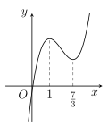
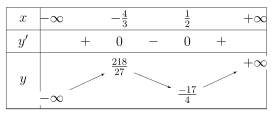
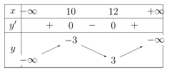
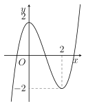
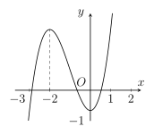

Phần I. Thí sinh trả lời từ câu 1 đến câu 12, mỗi câu hỏi chọn một phương án.
Câu 1
Cho hàm số có đồ thị như hình vẽ bên. Khẳng định nào sau đây là đúng?
A. Hàm số nghịch biến trên khoảng (−∞;1).
B. Hàm số nghịch biến trên khoảng (−∞;0).
C. Hàm số nghịch biến trên khoảng (37;+∞).
D. Hàm số đồng biến trên khoảng (−∞;1).

Câu 2
Cho hàm số y=−4x−98−5x. Khẳng định nào sau đây là sai?
A. Hàm số đồng biến trên khoảng (−∞;−437).
B. Hàm số đồng biến trên khoảng (−∞;−49).
C. Hàm số đồng biến trên khoảng (−49;+∞).
D. Hàm số nghịch biến trên khoảng (−∞;−437).
Câu 3
Cho hàm số có bảng biến thiên như sau

Khẳng định nào sau đây là đúng?
A. Hàm số nghịch biến trên khoảng (−∞;−34).
B. Hàm số đồng biến trên khoảng (−34;21).
C. Hàm số nghịch biến trên khoảng (27;+∞).
D. Hàm số đồng biến trên khoảng (−∞;−37).
Câu 4
Cho hàm số f(x) liên tục trên R và có đạo hàm f′(x)=(x−1)2(2−x). Hàm số f(x) đồng biến trên khoảng nào?
A.(–1;3).
B.(2;+∞).
C.(−∞;2).
D.(2;5).
Câu 5
Tìm tất cả các giá trị thực của tham số m để hàm số y=−31x3−mx2+(2m−3)x−m+2 nghịch biến trên R.
A.m⩽−3,m⩾1.
B.–3<m<1.
C.–3⩽m⩽1.
D.m⩽1.
Câu 6
Cho hàm số y=−x3−mx2+(4m+9)x+5, với m là tham số thực. Có bao nhiêu giá trị nguyên của m để hàm số nghịch biến trên (−∞;+∞)?
A. 5.
B. 6.
C. 7.
D. 4.
Câu 7
Cho hàm số y=7x3+9x2−3x−4. Khẳng định nào sau đây là sai?
A. Giá trị cực đại y=1.
B. Hàm số đạt cực tiểu tại x=71.
C. Giá trị cực tiểu y=71.
D. Hàm số đạt cực đại tại x=–1.
Câu 8
Cho hàm số y=f(x) xác định trên R và có bảng biến thiên như hình vẽ sau:

Hàm số y=f(x) đạt cực đại tại
A.x=10.
B.x=8.
C.x=12.
D.x=17.
Câu 9
Cho hàm số y=f(x) xác định trên tập R và có đồ thị như hình bên. Mệnh đề nào dưới đây đúng?
A. Hàm số đạt cực đại tại x=0 và đạt cực tiểu tại x=2.
B. Hàm số có giá trị lớn nhất bằng 2 và giá trị nhỏ nhất bằng –2.
C. Hàm số có giá trị cực tiểu bằng 2.
D. Hàm số có ba điểm cực trị.

Câu 10
Tìm tất cả các giá trị thực của m để hàm số y=x3−3x2+(m+1)x+2 có hai điểm cực trị.
A.m<2.
B.m⩽2.
C.m>2.
D.m<−4.
Câu 11
Cho hàm số y=x3−2mx2+(−34m2−40m−144)x−5 (m là tham số thực). Tìm tất cả các giá trị của m để hàm số có cực trị?
A.–11<m<−6.
B.m<−9 hoặc m>−4.
C.–14<m<−6.
D.m<−9 hoặc m>−6.
Câu 12
Cho hàm số y=8x3−6mx2+9mx+6m (m là tham số thực). Giá trị của m để hàm số đạt cực tiểu tại x=–6 thuộc khoảng nào sau đây?
A.(−∞;−335).
B.(−∞;−347).
C.(−323;+∞).
D.∅.
Phần II. Thí sinh trả lời từ câu 1 đến câu 4, trong ý a), b), c), d) ở mỗi câu câu, thí sinh chọn ĐÚNG hoặc SAI.
Câu 1
Cho hàm số f(x)=31x3−5x2+9x+8
a) Hàm số đã cho có đạo hàm là f′(x)=x2−10x+9.
b) Phương trình f′(x)=0 có tập nghiệm là S={1;9}.
c) Hàm số đã cho nghịch biến trên khoảng (1;9).
d) Giá trị cực tiểu của hàm số đã cho bằng 337.
Câu 2
Cho hàm số f(x)=2x−4+x+12.
a) Hàm số có đạo hàm f′(x)=(x+1)22(x2+2x).
b) Giá trị nhỏ nhất của hàm số trên khoảng (–1;+∞) bằng –2.
c) Điểm cực đại của đồ thị hàm số có tọa độ (0;–2).
d) Hàm số y=f(x) có tập xác định là D=R∖{−1}.
Câu 3
Cho hàm số f(x)=x3−3x2−1.
a) Hàm số đã cho nghịch biến trên R.
b) Hàm số đã cho đồng biến trên (3;+∞).
c) Hàm số đã cho nghịch biến trên (1;2).
d) Hàm số g(x)=f(x)+2 đồng biến trên (−∞;0).
Câu 4
Cho hàm số y=f(x) có đồ thị như hình vẽ bên.
a) Hàm số đã cho nghịch biến trên khoảng (–2,0).
b) Hàm số đã cho đồng biến trên khoảng (–3;1).
c) Hàm số đã cho đồng biến trên khoảng (2;+∞).
d) Hàm số f=∣f(x)∣ nghịch biến trên khoảng (–2,0).

Phần III. Thí sinh trả lời từ câu 1 đến câu 6 (không làm tròn các phép tính trung gian trong các câu từ 1 đến câu 6).
Câu 1
Cho hàm số y=4x3+8x2−3x+3. Giá trị cực đại của hàm số bằng bao nhiêu?
Câu 2
Điểm cực tiểu của hàm số y=x3−5x2−8x+8 bằng bao nhiêu?
Câu 3
Một chuyển động có vận tốc được xác định bởi phương trình v(t)=−t2+3t−2 với t⩾0, trong đó t tính bằng giây và v tính bằng m/s. Kể từ giây thứ bao nhiêu trở đi thì vận tốc của vật giảm?
Câu 4
Cho hàm số y=x3−4x2+5x+2. Hàm số có điểm cực đại và điểm cực tiểu lần lượt là x1,x2. Tính giá trị biểu thức A=x1−3x2.
Câu 5
Cho hàm số y=−x3−mx2+(4m+9)x+3 với m là tham số. Có bao nhiêu giá trị nguyên của m để hàm số nghịch biến trên (−∞;+∞)?
Câu 6
Đồ thị hàm số y=x3−3x2+2ax+b có điểm cực tiểu A(2;–2). Khi đó a+b bằng bao nhiêu?